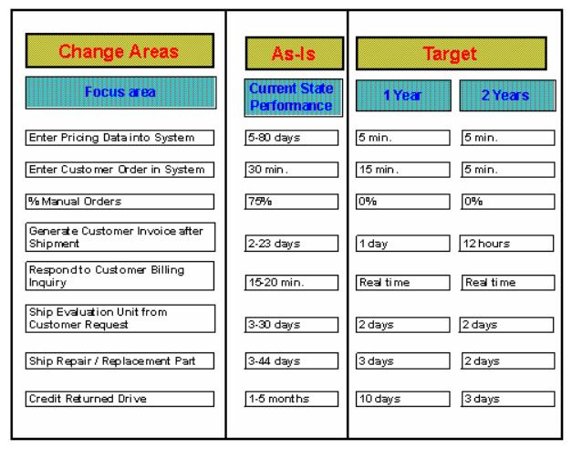

| Example: Process Benchmarks for Target Setting |
 |
|
| Related Elements |
|---|
The following example also illustrates the target setting that could result from process benchmarking. It shows that a client has measured its current performance and that he has decided about future targets for the different metrics. The future targets are based upon what the benchmark has indicated about best-in-class performers and the benefits and learning curve that the client does expect with respect to process improvements. It will be clear that the new targets are realistic only in case the client would implement a major change in its business process design. The direction for the process changes will come from the gap-analysis on the reasons behind the performance differences between the client’s and the best-in-class’ process. The first focus area for example shows an enormous improvement on the time needed to enter pricing data into a system. In this case the gap-analysis has indicated that pricing data in the client’s process is requested hardcopy, calculated manually and transmitted again hardcopy, whereas in the best-in-class process it is just calculated automatically after an online trigger in the system.
 |
| © Copyright IBM Corp. 1987, 2012 All Rights Reserved Property of IBM These materials are intended only for use as part of an IBM engagement |